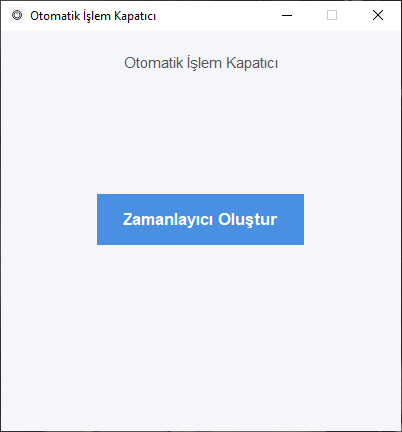
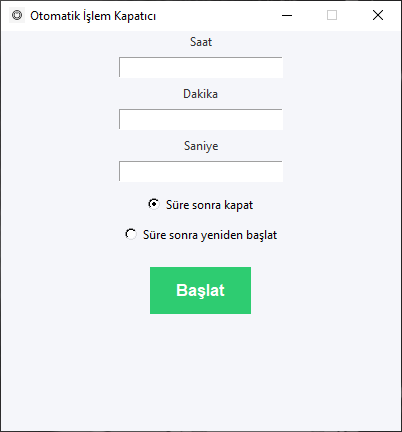
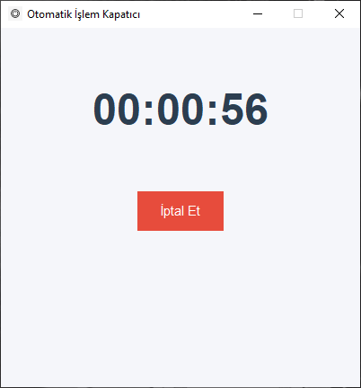

Otomatik Sistem Kapatıcı, belirlediğiniz süre sonunda bilgisayarınızı
otomatik olarak kapatan basit ve etkili bir masaüstü uygulamasıdır.
⚙️ Özellikler
- Dakika bazlı zamanlama
- Tek tıkla başlatma
- Arka planda sorunsuz çalışma
- Hafif ve hızlı
📥 İndirme
Windows için indir (.exe)
📸 Ekran Görüntüleri


